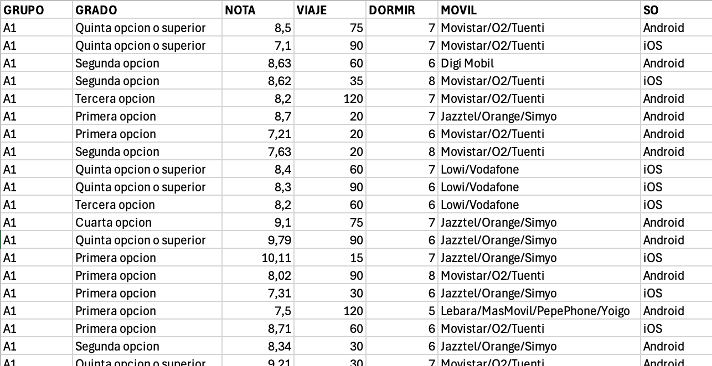

Práctica 2
Estadística descriptiva con una variable
1. Introducción
Con esta práctica se trata de utilizar R y RStudio para calcular medidas estadísticas sobre una variable. Los conceptos teóricos pueden encontrarse explicados en https://hilera.web.uah.es/estadistica/teoria/.
Se usarán en los ejemplos los datos suministrados por los estudiantes de un curso de la asignatura Estadística del Grado en Ingeniería en Sistemas de Información de la Universidad de Alcalá. Con las siguientes variables estadísticas:
- GRUPO: Grupo de laboratorio
- GRADO: Orden de preferencia elegido para el Grado en Ingeniería en Sistemas de Información por la Universidad de Alcalá
- NOTA: Nota final de acceso a la universidad
- VIAJE: Tiempo en llegar a la Escuela Politécnica en minutos
- DORMIR: Horas que se duerme los días laborables
- MOVIL: Compañía de la línea móvil
- SO: Sistema operativo del móvil

Para evitar problemas, se han borrado las filas en las que había algún valor vacío, y el fichero resultante se encuentra en “encuesta.csv”.
Se debe cargar el fichero encuesta.csv en una variable de tipo data.frame usando la función read.csv2(), preparada para leer fichero csv con columnas separadas por “;” y decimales con “,”. En este caso, se tomará el fichero de la URL de este repositorio, pero si te lo descargas en tu ordenador local, modifica la URL, por el nombre de tu ruta donde se encuentre el fichero.
Se pueden crear vectores indicando con $ el nombre de la columna:
El vector (nota) contiene:
Han respondido 74 estudiantes a la encuesta, pero el número total de estudiantes matriculados es de 108. Por tanto, las 74 observaciones disponibles corresponden a una muestra:
- Muestra: 74 estudiantes que han respondido a la encuesta
- Población: 108 estudiantes matriculados
La medidas que se calcularán en esta práctica sobre los estudiantes serán, por tanto, estadísticos ya que se calculan sobre una muestra (74 estudiantes). Si dispusiéramos de los datos de toda la población (108 estudiantes). las medidas se denominarían parámetros. Por ejemplo, en el caso de la medida conocida como media, existen dos casos:
- Estadístico: “media muestral”. Si se calcula con las 74 observaciones de la muestra.
- Parámetro: “media poblacional”. Si se calcula con las 108 observaciones de la población.
2. Cálculo de medidas estadísticas
En este apartado se utilizará R para calcular medidas estadísticas de centralización, de posición, de dispersión y de forma.
2.1 Medidas de centralización
Las medidas de centralización o de posición de tendencia central indican un valor alrededor del cual se distribuyen las observaciones.
| Medida | R | Comentarios |
|---|---|---|
| Media (aritmética) | El resultado sería NA si hay valores NA (no disponibles) en el vector x. Para calcular la media ignorando esos valores NA hay que utilizar el parámetro na.rm: |
x es un vector que contiene los valores de la variable estadística (cuantitativa), que deben ser valores numéricos. Se obtiene el cociente entre la suma de todos los valores y el número total de valores. |
| Mediana | |
x contiene valores numéricos (variable cuantitativa) Si x tiene un número impar de valores, la mediana es el número de la posición central. Si es par, la mediana es la media de los dos valores centrales. |
| Moda | No existe una función predefinida en R para la moda. Podemos crear una propia, como la siguiente, adaptada de la definida en statology.org: O se puede instalar un paquete como “modeest” y usar la función mlv: |
Obtiene el valor del vector x que más se repite. Puede devolver un valor, o un vector de valores en el caso de que haya más de una moda, porque existan valores que se repiten el mismo número de veces (variable multimodal). x puede ser un vector de valores numéricos (variable cuantitativa) o no numéricos (variable cualitativa). |
2.1.1 Ejemplos
- Media de la nota de acceso a la universidad (con dos cifras decimales)
- Mediana de la nota de acceso a la universidad
Al tener el vector un número par de valores (74), podemos comprobar que R ha calculado la mediana haciendo la media de los valores de las posiciones centrales 37 (7.804) y 38 (7.830).
- Moda de la nota de acceso a la universidad
Podemos instalar el paquete modeest y usar la función mlv:
La variable nota tiene sólo una moda, es el valor 7.8, que se repite 4 veces. Se puede calcular el número de veces que se repite la moda, con este comando:
- Moda del sistema operativo de los teléfonos móviles de los estudiantes
2.2 Medidas de localización (o posición)
Las medidas de localización o de posición de tendencia no central, permiten conocer otros puntos característicos de la distribución que no son los valores centrales. Son valores de la distribución que la dividen en partes iguales, es decir en intervalos (cuantiles) que comprenden el mismo número de datos como los deciles, cuartiles y percentiles.
| Medida | R | Comentarios |
|---|---|---|
| Percentil | |
p representa el percentil divido entre 100. Por ejemplo, el percentil 35 se calcularía indicando p=0.35. NOTA: Se usa type=2, porque hay hasta 9 formas de calcular cuantiles1, y el tipo 2 coincide con la explicada en teoría. |
| Cuartil | |
El primer cuartil (Q1) se obtiene con q=0.25. El segundo cuartil (Q2) con q=0.5. El tercer cuartil (Q3) con q=0.75. El cuarto cuartil (Q4) con q=1. |
| Varios percentiles o cuartiles | |
Se indican los percentiles o cuartiles en un vector. |
2.2.1 Ejemplos
Vamos a redondear todos los resultados con 2 cifras decimales, usando la función round().
- Percentil 10 de la nota de acceso a la universidad
Como hay 74 estudiantes, el 10% serían 7.4. Según la fórmula explicada en teoría, el percentil 10 sería 𝑋⌊7.4⌋+1 = 𝑋7+1 = 𝑥8. Si ordenamos la muestra y mostramos los 10 primeros valores, podemos comprobar que el de la posición 8 es 6.75 por lo que, en efecto ese es el percentil 10.
Lo que indica es que podemos asegurar que el 10% de los estudiantes de la muestra tiene una nota igual o inferior a 6.75, y que el 90% de los estudiantes tiene una nota de acceso igual o superior a 6.75.
- Primer y segundo cuartiles (Q1 y Q2) de la nota de acceso a la universidad
Lo que indica es que la cuarta parte (25%) de los estudiantes de la muestra tiene una nota de acceso igual o inferior a 7.27 y que la mitad de los estudiantes (50%) tiene una nota de acceso igual o inferior a 7.81. Ese valor coincide con la mediana.
- Tercer cuartil (Q3) de la nota de acceso a la universidad
Lo que indica que las tres cuartas partes (75%) de los estudiantes de la muestra tiene una nota de acceso igual o inferior a 8.6.
2.3 Medidas de dispersión
Las medidas de dispersión reflejan la heterogeneidad de las observaciones y dan una idea sobre la representatividad de las medidas de centralización, de tal forma que a mayor dispersión menor representatividad.
| Medida | R | Comentarios |
|---|---|---|
| Rango | |
Como vector: range obtiene un vector con dos valores: el valor más bajo y el más alto incluido en el vector x. Como valor: Diferencia entre el valor máximo y el valor mínimo. |
| Varianza muestral o cuasivarianza (s2) | |
Obtiene la varianza de la muestra de los n valores incluidos en el vector x, según la fórmula: \[s^{2} = \frac{\Sigma^{n}_{i=1}(x_{i}-\bar{x})^{2}}{n-1} \] |
| Varianza poblacional (\(\sigma^{2}\)) | No existe una función predefinida en R para la varianza poblacional. Podemos crear una propia, como la siguiente: |
Si el vector x contiene los valores de una variable estadística de una población completa, la varianza poblacional es: \[\sigma^{2} = \frac{\Sigma^{n}_{i=1}(x_{i}-\bar{x})^{2}}{n} \] |
| Desviación estándar o típica muestral (s) | |
Obtiene la desviación estándar de la muestra de los n valores incluidos en el vector x. \[s = \sqrt{\frac{\Sigma^{n}_{i=1}(x_{i}-\bar{x})^{2}}{n-1}} \] |
| Desviación estándar o típica poblacional (\(\sigma\)) | No existe una función predefinida en R para la cuasidesviación estándar. Podemos crear una propia, como la siguiente: |
Si el vector x contiene los valores de una variable estadística de una población completa, la desviación estándar poblacional es: \[\sigma = \sqrt{\frac{\Sigma^{n}_{i=1}(x_{i}-\bar{x})^{2}}{n}} \] |
| Coeficiente de variación | |
Se obtiene un valor entre 0 y 1. Cuanto menor sea su valor, mayor será la homogeneidad de los datos de la muestra y, por tanto, la media aritmética será una buena representante del conjunto de datos.2 |
| Rango intercuartílico | |
Obtiene la diferencia entre el tercer cuartil (Q3) y el primero (Q1). IQR = Q3-Q1 Los datos atípicos están fuera del intervalo: [Q1 - 1.5IQR, Q3 + 1.5IQR] NOTA: Como en el caso de la función quantile, se usa type=2, porque hay hasta 9 formas de calcular cuantiles, y el tipo 2 coincide con la explicada en teoría. |
2.3.1 Ejemplos
- Rango de la nota de acceso a la universidad
Como diferencia de notas es:
- Varianza de la nota de acceso a la universidad
NOTA: Se utiliza la varianza muestral o cuasivarianza, porque no se dispone de las notas de toda la población de estudiantes, sólo de una muestra, de los que respondieron a la encuesta.
- Desviación estándar o típica de la nota de acceso a la universidad
NOTA: Se dispone de una muestra, por lo que hay que calcular la desviación muestral.
- Coeficiente de variación de la nota de acceso a la universidad
NOTA: Muchos autores afirman que si es menor a 0.3 el conjunto de datos puede considerarse homogéneo, como ocurre en este caso.
- Rango intercuartílico de la nota de acceso a la universidad
Los datos atípicos están fuera del intervalo: [Q~1-1.5·IQR, Q~3+1.5·IQR] = [5.29, 6.62]
Footnotes
No existe un consenso sobre el método de cálculo de un percentil o un cuartil. Existen al menos 9 métodos diferentes, resumidos en un artículo de Hyndman y Fan (1996). La función quantile de R permite hacer el cálculo usando los 9 métodos del artículo, indicando el número del método (1 a 9) mediante un parámetro “type=n”. Si no se utiliza el parámetro type, por defecto se aplica el método número 7. El algoritmo aplicado en cada método está explicado en el artículo y en la ayuda de R a la que se accede con help(“quantile”) y en otras fuentes. La diferencia de los resultados no es significativa, y se basa en la forma de considerar los casos en los que el porcentaje es un número exacto.↩︎
Suele ocurrir en el campo de la Estadística que no hay consenso sobre la interpretación de los valores de algunas medidas estadísticas. Por ejemplo, en el caso del coeficiente de variación (CV), hay autores que afirman (también Wikipedia), que si CV≤0.3 la media aritmética es representativa de la muestra de datos, y por tanto es un conjunto de datos “Homogéneo”; mientras que si CV>0.3, la media no es representativa del conjunto de datos por ser un conjunto de datos “Heterogéneo”). Sin embargo, otros autores afinan más y proponen más rangos de valores. Se recomienda consultar este foro de discusión sobre valores aceptables para el coeficiente de variación.↩︎